Book
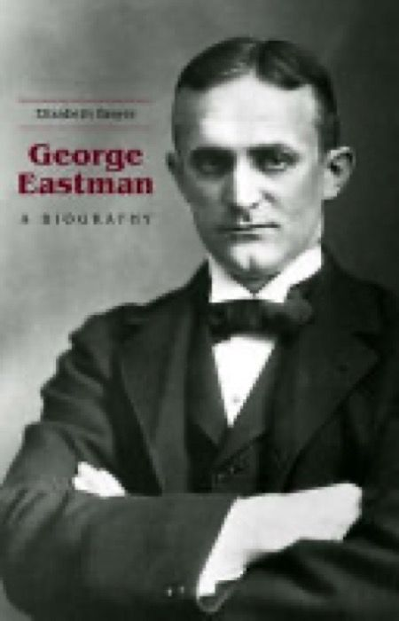
The definitive biography
Brayer, George Eastman: A Biography. The standard modern life of Eastman, and the book most of the facts trace back to. Evan ordered it in January; Claude read the whole of it in June.
Evan, January 2026
Fifteen sources shaped this essay about George Eastman, the founder of Kodak and the man who shaped Rochester, New York, where Evan is from. Here is each one in plain words, what it gave the essay, and where it landed. Nine Evan brought himself, one the George Eastman Museum sent him, and five were found by Claude's research. Three of the fifteen were left out in the end.
The essay is built between them. Setting one against the other was one of Evan's first ideas, on 3 August.

Brayer, George Eastman: A Biography. The standard modern life of Eastman, and the book most of the facts trace back to. Evan ordered it in January; Claude read the whole of it in June.
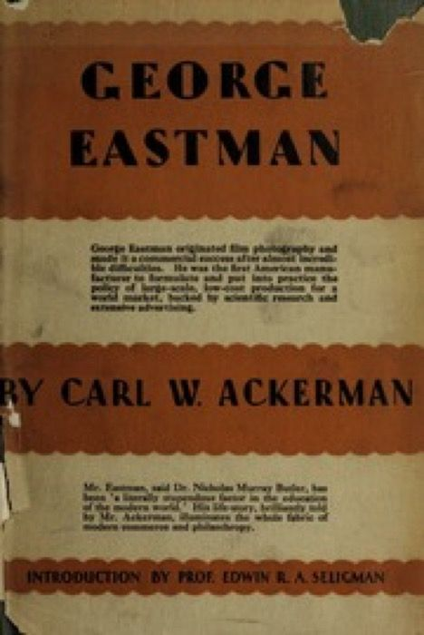
Ackerman, George Eastman (1930). The official version, written with Eastman's approval. It shows how the story was first told, and what it left out.
Documents, photographs and books he found or got hold of, and handed to Claude. One, the interview, was sent to him by the George Eastman Museum.
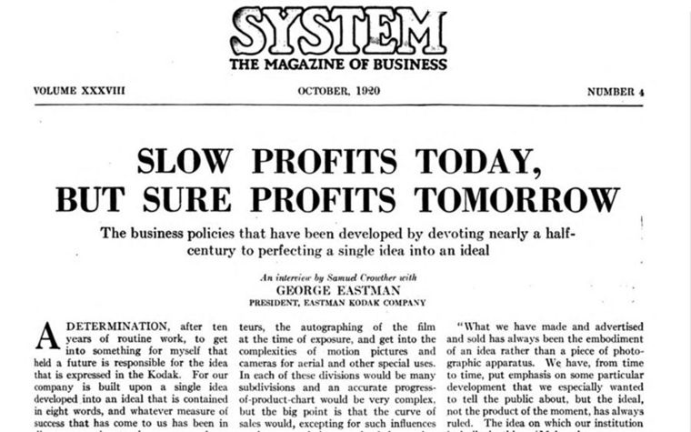
A 1920 interview in SYSTEM: The Magazine of Business, headed "Slow Profits Today, But Sure Profits Tomorrow." Eastman, then 66, tells the writer Samuel Crowther how nearly half a century of work came down to one idea: "make the camera as convenient as the pencil." He describes his first camera outfit, a soap-box-sized camera, a heavy tripod and a dark tent, and how he started as a $3-a-week office boy. A curator at the George Eastman Museum sent it to Evan in March, after giving him a tour. It sat unused until August, then gave the essay the soap-box camera and "you press the button."
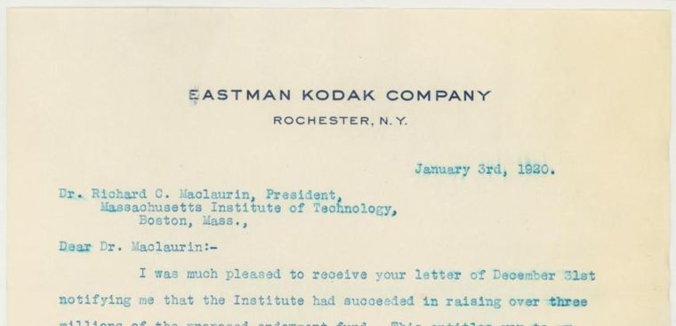
MIT's digitized correspondence between Eastman and its president, Richard Maclaurin: 269 pages of letters from the Office of the President records (AC-0013, Box 25), covering 1912 to 1930. It is the only large body of Eastman's letters Evan could find online, and most of it had never been quoted. Claude indexed every page. Evan chose one letter, the essay's only long quotation, and the file holds the Hotel Belmont scene in ¶18 and the "Mr. Smith" gift.
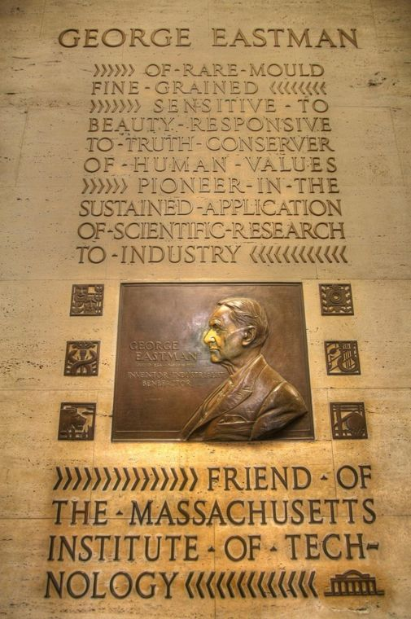
A photo of the memorial plaque to Eastman at MIT. Its carved words became the essay's last pages. An AI's first reading of the plaque was wrong on all six side panels, so Claude checked it against the photo and threw that reading out.
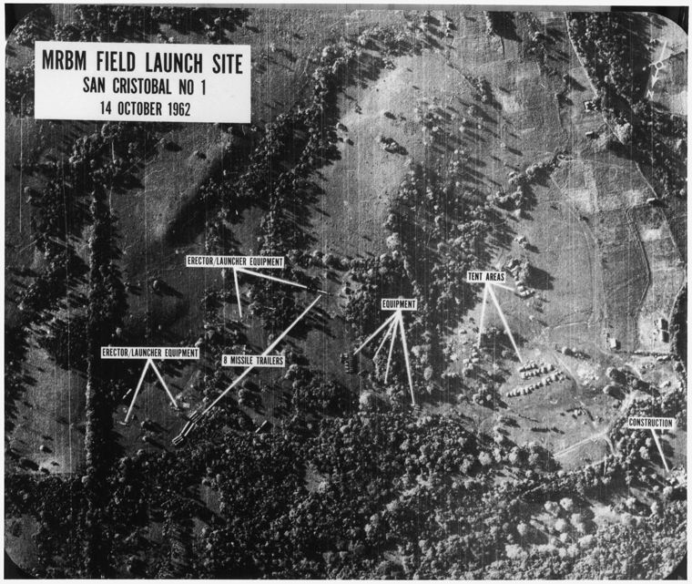
A record of Kodak's classified defense and aerospace work, the part of the story most people never hear. The essay never names it, but it holds up the paragraphs on spy planes and satellites.
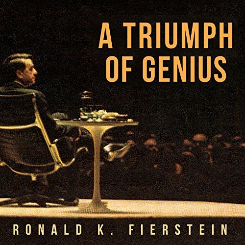
Fierstein, A Triumph of Genius, the book on the legal war between Kodak and Polaroid. It replaced a story that could not be proved with the Polaroid camera sequence and the $925 million court judgment.
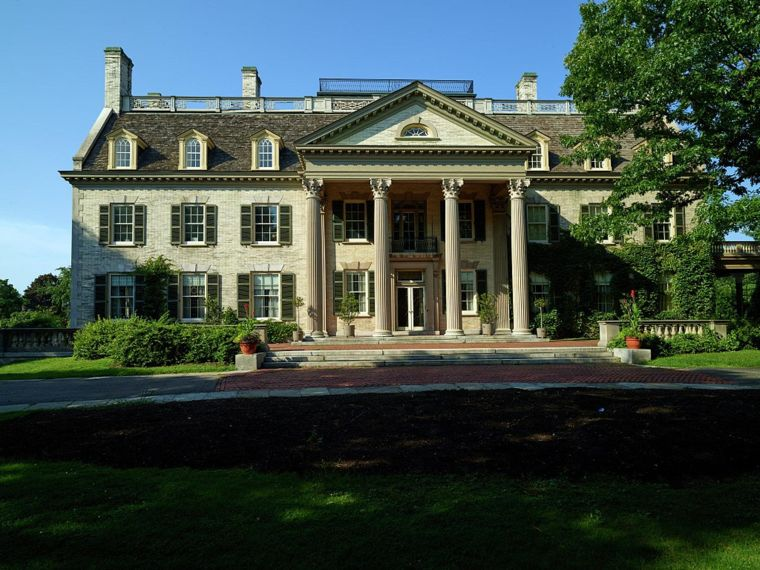
Records on Eastman's Rochester mansion, now a museum: walls fourteen inches thick, a house cut in two and moved nine feet four inches. Claude checked every claim against the landmark nomination.
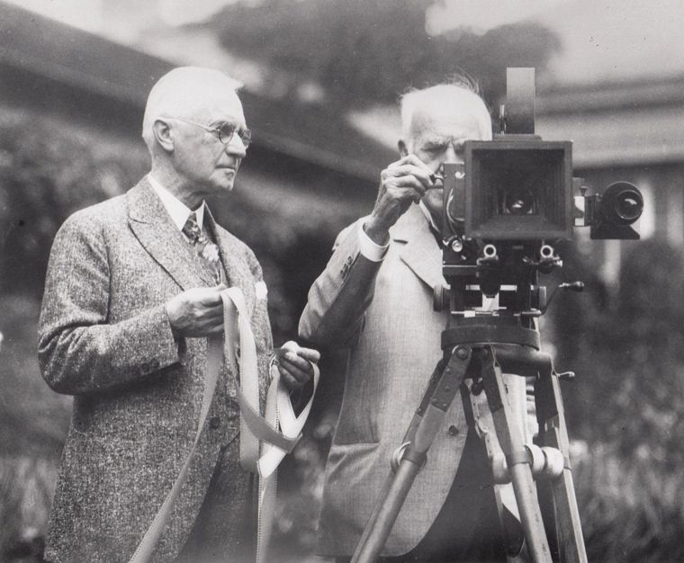
An email Evan wrote to one reader in June, two months before the essay existed, about Edison and Eastman. Its ideas became two paragraphs of the essay.
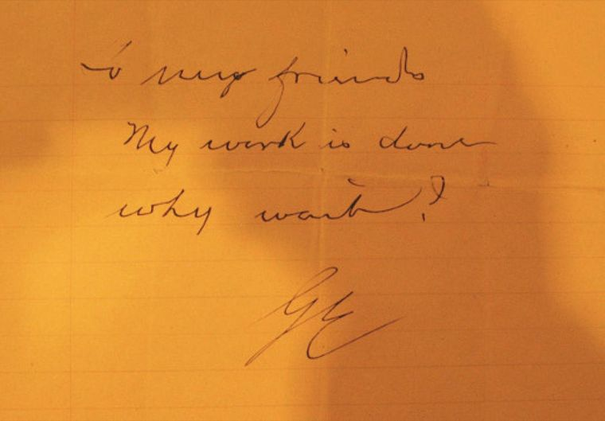
A photograph of Eastman's last note. Looking at it, not just reading about it, showed the essay said "seven words" when the note is three short lines. Fixed on the final day.
Claude searched for them while checking facts. Evan did not bring them.
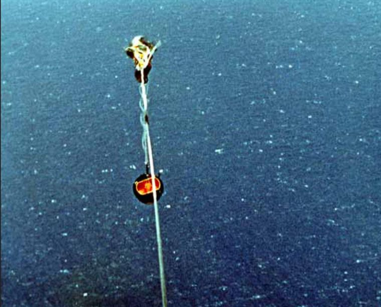
Declassified U.S. government history of the GAMBIT spy satellite. It moved the essay's turning point from 1976 to 1970 and knocked out three claims that turned out to be wrong.
A 1906 letter explaining why the company is called Kodak. It backs the line about "a name that meant nothing in any language."
Real, checked and not in the published essay. Each one was Evan's call.

Kodak's 1970 annual report, with the figures for a fall from $248 million to $160 million and 1,500 layoffs. Claude confirmed them. They stayed out for editorial reasons.
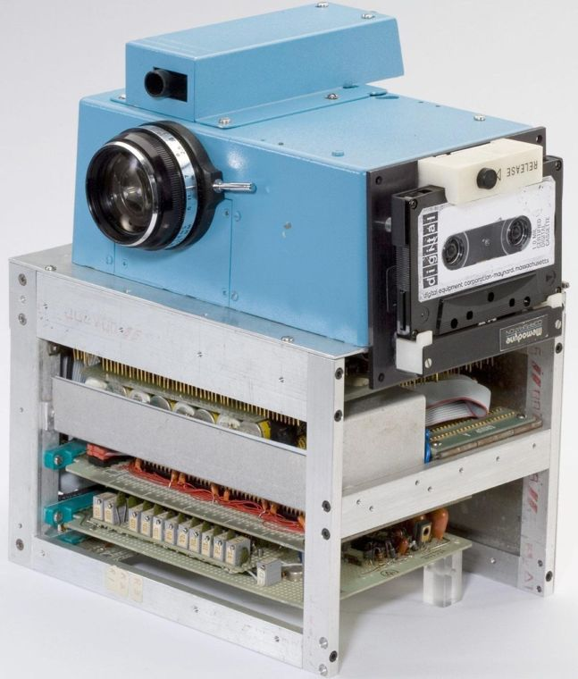
A 2012 Forbes quote from the Kodak engineer who built the first digital camera: "That's cute, but don't tell anyone." It is real. It stayed out because it did not serve the article.

A 2009 paper on "Shirley cards," the test photos that tuned color film to white skin. Cut from the essay in the tenth pass, because without the Douglass section the point could not be made. Kept for another essay.